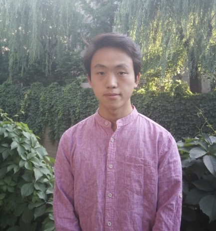

|
Mengfei Xia
Mengfei Xia is currently a fourth-year Ph.D. student at the Department of Computer Science and Technology, Tsinghua University, supervised by Prof. Yong-Jin Liu. Before that, he obtained a Bachelor's degree at the Department of Mathematical Science, Tsinghua University in 2020. He works closely with Dr. Yujun Shen. His research focuses on computer vision and deep learning, particularly on generative models.
Google Scholar /
GitHub /
LinkedIn /
Email
|
|

|